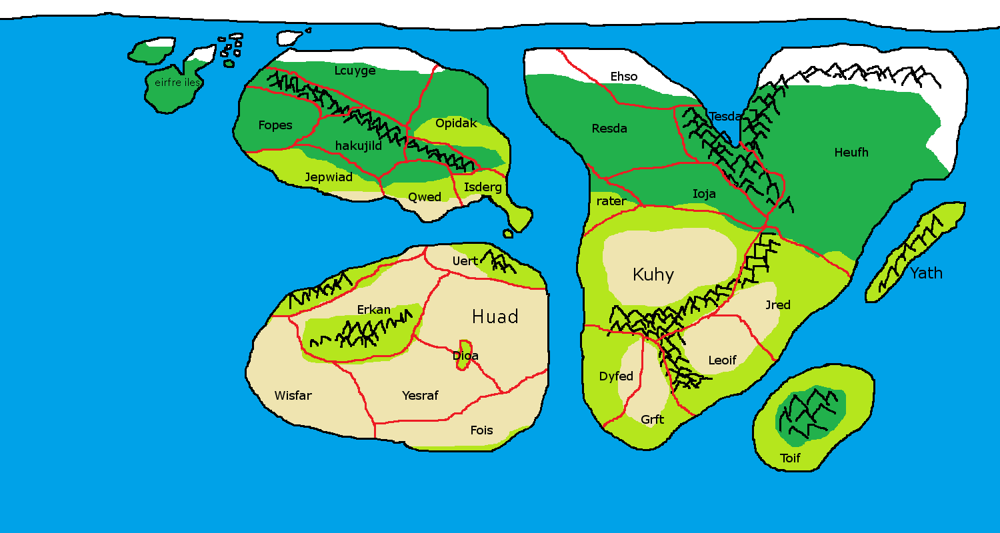

Fheohs
Fheohs is a project that started out as a mod for Fallout 4. Originally it was set in Arizona. It included Phoenix as the major city as well as Two Sons and all the way to Nogales on the border. The map also went up to Flagstaff, the capital of Caesar's Legion. I ended up designing a lot of the map and characters but trying to put a set of characters (the same ones from my comic) I found the world didn't fit the same story and would have to be set so far after Fallout 4, so that there were non of the same factions, it didn’t feel worth putting it in the same world. I then tried to make Fheohs (after designing a few things about the world) in a Skyrim mod but changed to making it in unity because of engine limitations. (converting to their model file format is a bit of a hassle.)
Fheohs is set in a Fantasy universe with the same basic history as my comic. Gods exist and each month is named after one. The Regini (who currently own Qwed, Uert, Rater) are trying to expand and own the whole world. The rest of the countries in the north west of the word have formed an alliance to fight back against the Regini. The main goal of this project is to create a Morowind-esk experiance focusing more on the characters and the players interaction with them rather than amazing graphics. Letting the player create their own story rather than the game presenting them with one
